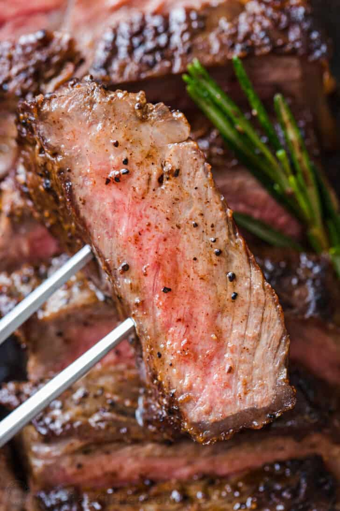

Steak

Description
Steak.
Ingredients
- steak
butter
- oil
- salt
pepper
- garlic
- rosemary
Steps
- Use paper towels to pat the steaks dry to get a perfect sear and reduce oil splatter
- Just before cooking steaks, sprinkle both sides liberally with salt and pepper
- Preheat the pan on medium and brush with oil
- Add steaks and sear each side 3-4 minutes until a brown crust has formed then use tongs to turn steaks on their sides and sear edges (1 min per edge)
- Melt in butter with quartered garlic cloves and rosemary sprigs
- Remove steak and rest 10 minutes before slicing against the grain